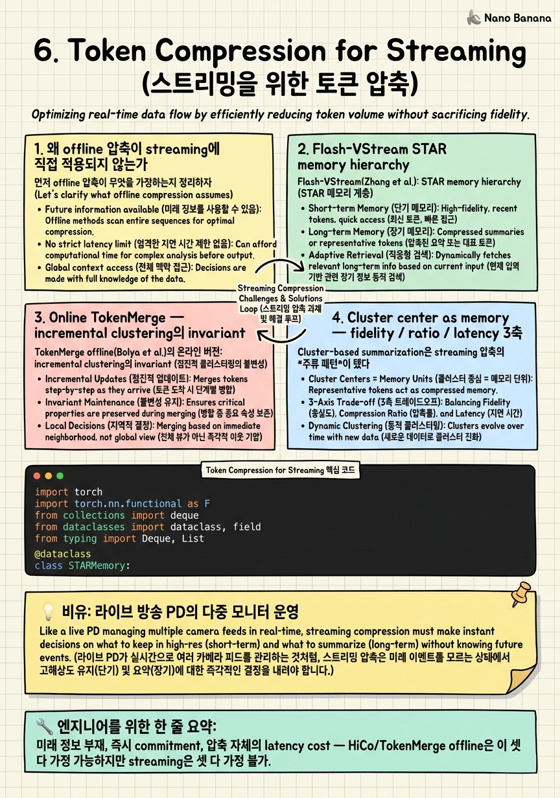

Token Compression for Streaming

🎯 학습 목표
- 오프라인 HiCo 압축이 왜 스트리밍에 직접 적용되지 않는지 latency / commitment 관점에서 설명할 수 있다
- Flash-VStream의 STAR 4-tier memory가 왜 'hierarchical'이어야 하는지 각 tier의 역할로 정당화할 수 있다
- Online TokenMerge / incremental clustering이 offline 버전과 어떤 invariant를 깨고 그 대가로 무엇을 얻는지 말할 수 있다
- compression ratio vs fidelity vs per-frame latency 3축 트레이드오프를 표로 그릴 수 있다
- streaming token budget을 'fixed cap + eviction'으로 운영하는 두 가지 정책(LRU vs salience)을 sketch할 수 있다
Chapter 4-5에서 streaming context와 visual encoder를 다뤘다면, 이 챕터는 그 사이에 끼는 *token compression layer*를 다룬다. General Video LLM에서는 압축이 'offline 후처리'였다. HiCo(VideoChat-Flash)나 offline TokenMerge처럼 전체 frame을 다 본 뒤 redundancy 분석을 한 번 돌려서 token budget에 맞춘다. Hour-scale에서는 episodic memory의 일부로 '이미 본 chunk를 압축해 저장'하는 게 핵심이었다 — 시간이 흘러도 *과거*는 변하지 않으므로 한 번 압축하면 끝이다.
Real-time은 둘 다 깨진다. 첫째, 미래를 모른다. 지금 도착한 frame이 30초 뒤 query에 결정적일지 노이즈일지 알 수 없다. 둘째, commitment이 즉시 일어난다. Offline은 전체를 본 뒤 무엇을 버릴지 결정하지만, streaming은 frame이 들어올 때마다 'memory에 넣을지, 어떤 압축 수준으로 넣을지, 누구를 evict할지'를 그 자리에서 결정해야 한다. 셋째, 압축 자체도 latency budget을 먹는다. Offline은 압축에 1분이 걸려도 quality만 좋으면 된다. 스트리밍은 per-frame budget의 일부를 압축에 써야 하므로 *compression cost*가 1급 metric이 된다.
그래서 이 챕터의 멘탈 모델은 'token을 더 잘 줄이는 알고리즘'이 아니라 '시간을 따라 token budget을 어떻게 분배할 것인가'다. STAR hierarchy, online TokenMerge, cluster-center memory는 모두 이 질문에 대한 서로 다른 답이다.
핵심 내용
1. 왜 offline 압축이 streaming에 직접 적용되지 않는가
먼저 offline 압축이 무엇을 가정하는지 정리하자. HiCo(VideoChat-Flash, arXiv:2501.00574)는 frame sequence 전체에 hierarchical clustering을 돌려서 1/50까지 token을 줄인다. TokenMerge offline은 모든 token pair의 similarity를 한 번에 계산해서 bipartite matching으로 merge한다. 두 알고리즘 모두 *전체 sequence가 주어졌다*는 batch assumption 위에 서 있다.
이 가정이 깨지면 세 가지 문제가 생긴다. (1) Future 정보 부재: HiCo가 'A frame이 cluster centroid가 되는 게 좋다'고 판단하려면 전체 distribution을 봐야 한다. 스트리밍에서는 t=10초 시점에 t=60초의 frame을 모른다. 그래서 centroid 선택이 *online estimation*이 된다. (2) 재배치 불가: offline TokenMerge는 시퀀스를 여러 번 패스하며 merge를 refine할 수 있다. 스트리밍에서는 한 번 merge한 token을 *되돌릴 수 없다* — pipeline 다음 stage로 흘러갔기 때문. 결정이 final이라는 commitment 비용이 크다. (3) Latency budget 분배: offline 압축이 5분 영상에 30초를 써도 무방하지만, 실시간 33ms budget(30fps)에서 압축이 10ms 먹으면 encoder/LLM의 budget이 사라진다.
결론: offline 압축의 'quality at any cost' 가정을 'quality under streaming constraint'로 다시 써야 한다. 그래서 streaming-friendly 압축은 (a) per-frame O(1)/O(log N) cost, (b) irreversible commit 가능, (c) future-blind decision 하에서도 합리적 — 이 세 invariant를 만족해야 한다.
2. Flash-VStream STAR memory hierarchy
Flash-VStream(Zhang et al., arXiv:2406.08085)이 이 문제에 대한 가장 깔끔한 답을 줬다. 핵심은 STAR: Spatial / Temporal / Abstract / Retrieval 4-tier memory다. 단일 buffer가 아니라 *시간 스케일이 다른* 4개 layer가 협력한다.
| Tier | 보관 단위 | 시간 스케일 | 압축 비율 | |---|---|---|---| | Spatial | 최근 1-2초 raw token | 단기 (현재 frame 주변) | 1x (raw) | | Temporal | 5-10초 windowed token | 중기 | 4-8x | | Abstract | 분 단위 cluster center | 장기 | 50-100x | | Retrieval | 전체 history index | 영구 | 1000x+ |
Spatial tier는 '지금 무엇이 일어나고 있는가' 질문에 fidelity를 보장한다. Temporal tier는 '몇 초 전 무슨 일이 있었는가'에 대응하고 sliding window로 운영된다. Abstract tier는 분 단위의 *semantic gist*를 cluster centroid로 보관한다. Retrieval tier는 전체 history를 retrieval-friendly한 embedding index로 보관하고, query가 들어오면 abstract tier로는 부족할 때만 활성화된다.
핵심 micro-design decision: 각 tier로 token이 *자동으로 강등(demotion)*된다. Spatial buffer가 가득 차면 oldest token이 temporal로 내려가면서 4-8개씩 묶여 평균된다. Temporal이 가득 차면 abstract로 내려가면서 K-means cluster center 하나로 줄어든다. 이건 Atkinson-Shiffrin의 sensory→working→long-term memory와 정확히 같은 패턴이지만, *시간이 흘러 자동으로 강등된다*는 게 streaming의 핵심 차별점이다. Hour-scale 시스템은 chunk 단위로 한 번에 처리해서 memory bank에 적재하지만, Flash-VStream은 frame이 도착할 때마다 STAR pipeline을 한 칸씩 shift시킨다.
또 하나의 결정: tier 간 transition이 *deterministic schedule*이다. 'salience score가 높으면 spatial에 더 오래 둔다'가 아니다. 시간만 보고 결정한다. 왜? Salience 기반 retention은 *evaluation*이 필요해서 per-frame cost가 늘어난다. Streaming budget 안에서는 'simple but wrong sometimes'가 'optimal but slow'를 이긴다.
3. Online TokenMerge — incremental clustering의 invariant
TokenMerge offline(Bolya et al., ICLR 2023, arXiv:2210.09461)은 ViT의 매 layer에서 token pair를 bipartite matching으로 merge한다. 시퀀스 전체를 보고 가장 비슷한 pair부터 줄인다. Streaming에서는 이 알고리즘이 그대로는 안 굴러간다 — 미래 token이 없기 때문이다.
Online variant의 핵심 아이디어는 incremental cluster maintenance다. 도착한 token을 기존 cluster 중 가장 비슷한 곳에 흡수(absorb)시키거나, 충분히 다르면 새 cluster를 만든다. 알고리즘 sketch:
`
for t in stream:
emb = encoder(frame_t)
for token in emb:
sim, k = nearest_cluster(token, clusters)
if sim > merge_threshold:
clusters[k] = ema_update(clusters[k], token, alpha=0.1)
elif len(clusters) < CAP:
clusters.append(token)
else:
evict(least_recently_used)
clusters.append(token)
`
여기서 깨지는 offline invariant 세 개. (1) Optimal merge order: offline은 global similarity ranking으로 가장 비슷한 pair부터 처리한다. Online은 도착 순서대로 처리해서 *suboptimal*. 대신 per-token cost가 O(K) (cluster 수)로 고정. (2) Reversibility: offline은 'A와 B를 merge했는데 나중에 C가 들어왔으니 A-C가 더 어울린다'를 다시 할 수 있다. Online은 EMA update로 *부드러운 보정*만 가능. (3) Cluster count: offline은 target token 수를 정확히 맞춘다. Online은 CAP을 두고 *eviction policy*로 운영. K-means streaming 변종(BIRCH, online K-means)의 정신과 같다.
실전에서는 *threshold + CAP + eviction* 세 hyperparameter가 streaming 압축의 dial이 된다. Threshold가 너무 낮으면 cluster가 폭발하고, 너무 높으면 모든 token이 하나로 뭉뜬다. CAP은 LLM context budget으로 결정. Eviction은 LRU(시간 기반) vs salience(query-aware)의 선택이 있다.
4. Cluster center as memory — fidelity / ratio / latency 3축
Cluster-based summarization은 streaming 압축의 *주류 패턴*이 됐다. Flash-VStream의 Abstract tier, MovieChat의 short-term memory, 심지어 Gemini Live의 video token consolidation도 모두 cluster center 운영의 변종이다. 그러나 cluster 운영을 어떻게 tune하느냐에 따라 세 축이 trade-off된다.
| Knob | Compression ratio | Fidelity | Per-frame latency | |---|---|---|---| | Cluster CAP 작게 | 높아짐 | 떨어짐 | 낮아짐 | | Merge threshold 낮게 | 낮아짐 | 높아짐 | 높아짐 (cluster 폭발) | | EMA alpha 크게 | - | 최근 weight | 낮아짐 | | Salience-aware eviction | - | 높아짐 (query 관련 유지) | 높아짐 (salience 평가 cost) |
실전 숫자 감각: VideoLLM-online은 frame당 SigLIP 256 token을 *그대로* LLM에 넣지만 frame rate를 2 FPS로 제한한다. Flash-VStream은 Spatial 32 + Temporal 32 + Abstract 16 ≈ 80 token만 LLM context에 둔다 — 압축 비율 ~10x. 같은 budget으로 30 FPS를 받을 수 있다. 대신 정밀한 visual fact-checking('이 사람 셔츠에 작은 로고가 보이나')은 spatial tier가 잠깐 갖고 있다가 잃는다.
여기서 시니어 결정 포인트: '무엇을 잃을 것인가'를 product 요구로부터 역산하는가. Sports 실시간 해설은 short-term fidelity가 결정적(Spatial tier 키워야 함). Long meeting summarization은 abstract gist가 결정적(Abstract tier 키워야 함). 같은 STAR architecture라도 tier capacity 배분이 product에 따라 다르다. 'STAR을 썼다'는 framework choice일 뿐 답이 아니다.
5. Token budget을 시간을 따라 분배하기 — eviction policy의 정치학
Streaming 압축의 가장 까다로운 부분은 eviction policy다. Cluster CAP, STAR tier 모두 고정 budget이므로 새 token이 들어올 때 누구를 내보낼지 결정해야 한다. 두 주류 정책.
LRU (Least Recently Used). 가장 오래된 token부터 demote/evict. 단순하고 빠르다 (O(1) with deque). 모든 token을 동등한 시간 가치로 본다는 가정 위에 있다. Sliding window의 자연스러운 일반화다. 단점: query가 '20분 전에 무슨 일이 있었나'면 이미 evict됐다.
Salience-aware. 각 token에 'salience score'를 매기고 낮은 점수부터 evict. Score는 (a) encoder의 attention magnitude, (b) 이전 query에 의해 attend된 정도, (c) cluster centroid로서의 representative power 등으로 계산. 단점: 평가 자체가 cost. 또 'salience를 정확히 매길 수 있다'는 가정은 *future-blind* 환경에서 깨진다.
중간 지점이 있다. Tiered demotion: LRU로 빠르게 강등하되, demotion 시점에 cluster center로 압축. 이게 STAR의 실제 동작이다. 'evict'를 binary로 보지 않고 'compress harder'로 다룬다. LRU의 O(1) 비용으로 운영하면서, fidelity는 compression schedule로 점진적 손실시킨다.
Production 관점에서 하나 더: eviction 결정이 reproducible해야 한다. Debugging이나 incident replay에서 'p99 latency가 튄 frame이 왜 evict됐는가'를 추적하려면 결정 함수가 deterministic이어야 한다. Salience-aware 정책이 stochastic하거나 model state에 의존하면 production에서 다루기 힘들다. 이게 industry에서 STAR 같은 'simple-but-deterministic' 압축이 'salience-aware optimal' 변종보다 많이 채택되는 이유다.
💡 비유로 이해하기
라이브 방송 PD실의 콘솔을 떠올려보자. PD 앞에는 모니터가 4개 있다. (1) 지금 방송에 나가는 메인 모니터(Spatial tier). 1초 단위로 모든 디테일을 본다. (2) 직전 30초의 4개 카메라 분할 프리뷰(Temporal tier). 어느 카메라 컷이 좋았는지 비교할 수 있게 들고 있는다. (3) 큐시트 보드(Abstract tier). 5분 단위로 'A 게스트 인터뷰, B 코너, C 광고' 같은 요약만 적혀 있다. (4) 아카이브 검색기(Retrieval tier). '3주 전 같은 게스트가 무슨 말 했지?'를 PD가 입력하면 그제서야 켜진다.
Offline 압축은 방송이 끝난 다음 영상 편집자가 6시간 영상을 5분 하이라이트로 정리하는 것이다. 전체를 보고 결정한다. 충분한 시간이 있다. 결정을 되돌릴 수도 있다.
Streaming 압축의 PD는 그 사치가 없다. 카메라에서 화면이 1초마다 새로 들어오고, 콘솔의 메인 모니터 buffer는 무한하지 않다. 1초마다 *오래된 화면을 어디로 옮길지*를 결정해야 한다. 큐시트 보드에 메모로 남기든, 4분할 프리뷰로 demote하든, 아카이브 검색기에 인덱싱하고 잊든. 결정을 잘못해서 30분 뒤 PD가 '아까 그 카메라 컷 다시!'라고 외쳐도, 이미 evict된 raw frame은 못 돌아온다 — 압축본만 남아 있다.
그래서 PD실의 콘솔 설계가 STAR 그 자체다. 'tier가 여러 개여야 하는 이유'와 'tier 간 자동 강등이 있어야 하는 이유'가 라이브 방송 운영에서 자연스럽게 도출된다. Streaming token compression은 라이브 방송 콘솔을 LLM context에 옮긴 것이다.
💻 코드 예시
Flash-VStream STAR memory hierarchy의 streaming-friendly sketch. 매 frame이 도착할 때 Spatial → Temporal → Abstract 자동 demotion이 일어나고, LLM context는 매번 4-tier에서 join해서 만들어진다. Cluster center 갱신은 EMA로 incremental.
import torch
import torch.nn.functional as F
from collections import deque
from dataclasses import dataclass, field
from typing import Deque, List
@dataclass
class STARMemory:
spatial_cap: int = 32 # ~1s @ 30fps, raw recent tokens
temporal_cap: int = 32 # 4-8s window, pooled groups
abstract_cap: int = 16 # minute-scale cluster centers
pool_group: int = 4 # spatial->temporal mean-pool size
merge_thresh: float = 0.85 # cosine threshold for cluster absorb
ema_alpha: float = 0.1
spatial: Deque[torch.Tensor] = field(default_factory=deque)
temporal: Deque[torch.Tensor] = field(default_factory=deque)
abstract: List[torch.Tensor] = field(default_factory=list)
ab_counts: List[int] = field(default_factory=list) # samples per cluster
def _demote_spatial_to_temporal(self):
# When spatial overflows, pool oldest group into one temporal slot.
if len(self.spatial) <= self.spatial_cap:
return
group = [self.spatial.popleft() for _ in range(self.pool_group)]
pooled = torch.stack(group).mean(0)
self.temporal.append(pooled)
def _demote_temporal_to_abstract(self):
if len(self.temporal) <= self.temporal_cap:
return
evicted = self.temporal.popleft()
# Try to absorb into nearest cluster; else create new (with eviction).
if self.abstract:
sims = torch.stack([F.cosine_similarity(evicted, c, dim=0)
for c in self.abstract])
best, k = sims.max(0)
if best.item() > self.merge_thresh:
self.abstract[k] = ((1 - self.ema_alpha) * self.abstract[k]
+ self.ema_alpha * evicted)
self.ab_counts[k] += 1
return
if len(self.abstract) >= self.abstract_cap:
# LRU-style eviction: drop least-updated cluster.
idx = min(range(len(self.abstract)), key=lambda i: self.ab_counts[i])
self.abstract.pop(idx); self.ab_counts.pop(idx)
self.abstract.append(evicted.clone()); self.ab_counts.append(1)
def ingest(self, frame_token: torch.Tensor):
self.spatial.append(frame_token)
self._demote_spatial_to_temporal()
self._demote_temporal_to_abstract()
def as_context(self) -> torch.Tensor:
parts = [list(self.spatial), list(self.temporal), self.abstract]
flat = [t for tier in parts for t in tier]
return torch.stack(flat) if flat else torch.empty(0)세 가지 streaming-friendly 디자인 결정이 보인다. (1) _demote_spatial_to_temporal은 deque의 popleft로 O(1). Spatial buffer가 가득 차면 *시간 순서대로* 4개씩 묶어 temporal로 강등하면서 평균 풀링한다 — salience 평가 없음, deterministic. (2) _demote_temporal_to_abstract은 cluster absorb 시도 → 실패 시 신규 cluster 생성 → cap 초과 시 'least-updated cluster를 evict'하는 streaming K-means 패턴. EMA update로 cluster center가 새 token 방향으로 *부드럽게* 이동. (3) as_context는 매 호출에서 4-tier를 join해 LLM context를 만든다. 호출 시점의 spatial은 최신 raw token, abstract는 분 단위 gist를 동시에 제공. 압축 비율 계산: spatial 32 + temporal 32 + abstract 16 = 80 token으로 운영하면 30 FPS 1분 = 1,800 frame × 256 token = 460K raw token이 80 token으로 들어간다. 5,750x 압축이지만 *recency-weighted* 압축이라서 최근 정보의 fidelity는 보존된다.
🏭 현업에서의 평가
✅ 시니어가 보는 것
- '미래를 모른다 + commitment이 즉시 + 압축도 budget을 먹는다' 세 invariant를 streaming 압축의 정의로 가져옴
- STAR 4-tier를 단순히 외우는 게 아니라 *시간 스케일이 다른 4개*라는 구조로 정당화
- cluster-based summary 운영에서 threshold / CAP / eviction 세 dial을 따로 분리
- compression schedule (즉 누구를 언제 더 압축할지)을 product 요구(sports vs meeting)에서 역산
- eviction 결정의 reproducibility를 production 관점에서 평가축에 둠
⚠️ 레드 플래그
- HiCo나 offline TokenMerge를 streaming에 그대로 가져와도 된다고 답함
- STAR의 4-tier를 '그냥 buffer를 4개 두면 좋다'로 환원하고 시간 스케일 차이를 설명 못함
- cluster-based 압축에서 'K-means를 매 frame 다시 돌리면 된다'고 답함 (per-frame budget 무시)
- salience-aware eviction을 production에 무조건 추천 (reproducibility / debug 어려움 무시)
- 압축 cost를 0으로 가정하고 LLM latency만 최적화
🎤 예상 인터뷰 질문
- **Q1. STAR tier capacity 배분.** 30 FPS live sports 해설 시스템과 60분 회의 요약 시스템 두 product가 같은 STAR memory를 쓴다. 두 product에서 Spatial / Temporal / Abstract tier capacity를 어떻게 다르게 배분할 것인지, 실패 시나리오를 들어 정당화하라.
- **Q2. Online TokenMerge가 깨는 invariant.** Offline TokenMerge가 보장하는 어떤 invariant를 online 변종이 깨는가? 그 trade를 받을 수 있는 product와 받을 수 없는 product를 각각 하나씩 들어라.
- **Q3. LRU vs salience-aware eviction.** Streaming token pool의 eviction policy로 LRU와 salience-aware 중 LRU를 선택해 production에 배포한 결정을 옹호하라. 'optimal이 아닌데 왜 골랐는가'를 reproducibility, per-frame latency, debugging 세 축에서 정당화하라.
✨ 핵심 요약
Offline 압축의 3가지 가정이 streaming에서 깨진다
미래 정보 부재, 즉시 commitment, 압축 자체의 latency cost — HiCo/TokenMerge offline은 이 셋 다 가정 가능하지만 streaming은 셋 다 가정 불가.
Flash-VStream STAR은 시간 스케일이 다른 4-tier memory다
Spatial(초)/Temporal(수 초)/Abstract(분)/Retrieval(영구). 단일 buffer가 아닌 hierarchical이어야 *압축률과 fidelity를 시간 함수로* 분리 가능.
Tier 간 강등은 deterministic schedule이어야 한다
Salience 기반 retention은 per-frame budget을 침범. Streaming에서는 'simple but wrong sometimes'가 'optimal but slow'를 이긴다.
Online TokenMerge는 3개 invariant를 깨고 O(K) cost를 얻는다
Optimal merge order, reversibility, exact target count — 셋 다 포기. 대신 per-frame O(K) cluster-수 비용으로 streaming에 들어갈 수 있다.
Compression은 ratio·fidelity·latency 3축 trade다
Cluster CAP, merge threshold, EMA alpha, eviction policy가 모두 세 축 사이의 dial. Product 요구로부터 어느 축이 critical인지 역산해야 한다.
Cluster center as memory가 streaming 압축의 주류 패턴이다
Flash-VStream Abstract tier, MovieChat short-term, Gemini Live token consolidation 모두 동일 패턴의 변종. Streaming K-means / BIRCH의 정신과 직접 연결.
Eviction policy의 reproducibility가 production을 결정한다
Salience-aware가 'optimal'이라도 stochastic이면 incident replay에서 'p99 튄 frame을 왜 evict했나'를 못 따진다. LRU + tiered demotion이 production에서 자주 이긴다.
STAR을 썼다는 framework choice일 뿐 답이 아니다
Sports 해설 vs meeting 요약은 같은 STAR라도 tier capacity가 달라야 한다. Streaming 압축의 시니어 결정은 *capacity allocation을 product에서 역산하는 능력*이다.